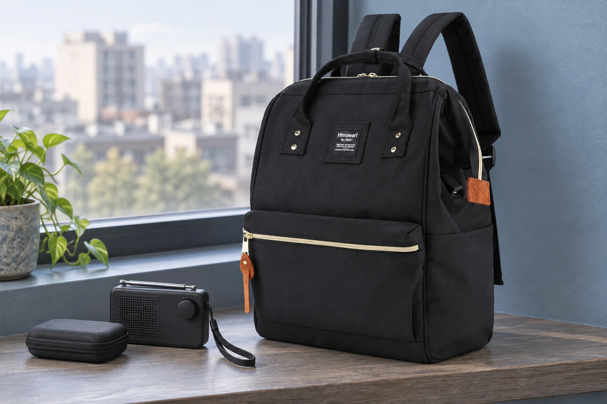

휴대용 라디오를 담기 전, 안테나의 자리

라디오를 듣던 자리에서 이동하려고 하면 본체는 손에 쉽게 들어오지만 길게 뽑아둔 안테나가 남습니다. 가방 입구에 넣으면서 지퍼나 다른 소지품으로 눌러 접으려 하면 기기를 제대로 볼 수 없습니다. 라디오를 받친 상태에서 정리하고 그다음 케이스와 가방을 여는 순서로 바꾸면, 작은 기기의 어느 부분이 아직 펼쳐져 있는지 확인하기 쉽습니다.
소리를 줄인 상태와 전원을 끈 상태
음량을 낮추는 조절과 전원을 끄는 조작이 같은지 자신의 기기에서 확인합니다. 다이얼을 낮은 쪽으로 돌렸더라도 어떤 상태인지 모르면 사용 설명서의 전원 항목을 봅니다. 조용해졌다는 이유만으로 정리가 끝났다고 판단하지 않습니다. 기기를 처음 사용할 때 전원 조작을 익혀두면 이동 직전에 작은 표기를 급하게 찾을 부담도 줄어듭니다. 상태를 확인한 뒤 연결된 소품을 따로 정리합니다.
이어폰이나 외부 전원선이 있다면 기기 안내에 맞춰 분리합니다. 선을 잡고 본체까지 끌어당기지 않고 본체를 따로 받칩니다. 분리한 케이블은 원래 관리 방식에 맞춰 정리하고 다음에 찾을 자리를 정합니다. 연결한 채 이동하도록 안내하는 구성인지도 제품별로 확인할 부분입니다. 라디오마다 연결부와 부속품이 다르므로 사용하는 구성 전체를 보고 무엇을 먼저 처리할지 정하면 됩니다.
들을 때 쓴 손목끈은 안테나와 별도로 다룹니다. 긴 끈을 펼친 안테나에 감아 묶으면 꺼낼 때 둘을 함께 잡게 될 수 있습니다. 끈의 원래 부착 상태와 보관 방법을 확인하고 기기에서 움직이는 부분이 무엇인지 구별합니다. 작은 라디오를 옮길 때에는 안테나를 손잡이처럼 잡기보다 본체를 받칠 면을 먼저 정해두면 케이스에 담는 동작도 이어서 할 수 있습니다.
늘이는 동작과 방향을 바꾸는 동작
안테나의 길이를 줄이는 방법과 각도를 바꾸는 방법은 기기 설명에서 각각 확인합니다. Sony의 FM 안테나 취급 안내에는 FM 안테나의 방향을 조절할 때 굵은 부분을 잡도록 하는 주의사항이 있습니다. 이 안내를 모든 라디오의 동일한 접는 순서로 옮기지 않고, 자기 기기의 움직이는 방향과 보관 위치를 읽는 참고로 사용합니다. 끝을 잡아 휘는 힘으로 위치를 바꾸는 일은 피합니다.
평소보다 움직임이 뻑뻑하거나 원래 자리로 돌아가지 않는다면 그 상태부터 살펴봅니다. 가방에 들어가도록 억지로 구부리기 전에 사용 안내나 제품 문의로 확인합니다. 기기별로 회전할 수 있는 방향이 다를 수 있으므로 다른 라디오의 모양을 보고 같은 범위를 기대하지 않습니다. 이미 변형된 부분이 있으면 더 작게 접어 해결하려고 하지 않고 현재 상태를 남겨 문의할 수 있습니다.
Himawari No.9001과 라디오를 함께 두는 장면에서는 안테나가 정리된 기기부터 이동 묶음으로 만드는 순서를 생각합니다. 케이스가 있다면 그것을 닫은 모습으로 넣을 자리를 확인합니다. 가방 입구에서 안테나를 접는 동작까지 처리하려 하지 않고, 기기 준비를 마친 뒤 가방을 여는 것입니다. 본체를 꺼낼 때도 무엇을 잡고 케이스를 열지 먼저 정할 수 있습니다.

케이스 안에 남는 다이얼과 끈
안테나를 정리한 뒤 라디오를 케이스에 넣고 뚜껑과 조절부의 위치를 대조합니다. 본체 외형이 들어가도 다이얼이 눌리거나 끈이 여밈 사이에 남을 수 있습니다. 케이스를 닫으려면 계속 힘을 주어야 하는지, 남는 소품이 밖으로 나오는지 살펴봅니다. 스피커 쪽이나 연결부에 단단한 플러그를 겹쳐 놓아 공간을 만들지 않고 라디오와 분리한 소품의 자리를 나눕니다.
케이스를 쓰지 않는 구성이라면 제품이 안내하는 이동 방법을 확인합니다. 일반 백팩을 라디오의 충격 보호 장치로 간주하지 않습니다. 자주 듣는다고 항상 쉽게 꺼낼 자리만 우선하면 다른 물건과 닿는 위치를 놓칠 수 있으므로, 꺼내기 쉬운 동작과 실제로 놓이는 모양을 함께 봅니다. 기기를 담은 후 가방 안에서 돌출된 부분이 무엇과 만나는지도 살펴볼 수 있습니다.
외출 중 다시 들을 계획이라면 케이스에서 꺼내 본체를 안정된 자리에 놓은 뒤 안내에 맞춰 사용 상태로 바꿉니다. 이동 상태와 듣는 상태를 한꺼번에 만들지 않고 각각 마무리합니다. 이어폰이나 선이 다른 사람의 통로를 가로지르지 않는 위치를 정하고, 라디오를 두고 자리를 옮길 때에는 작은 부속품도 같이 확인합니다. 쉬는 장소가 바뀌면 펼칠 수 있는 자리도 그때 다시 살펴봅니다.
귀가 후에는 라디오를 가방에서 꺼내 평소 보관 위치로 옮깁니다. 이동용 케이스를 열었을 때 끈이 안테나에 감겼거나 조절부가 눌린 흔적이 있으면 다음 담는 방법을 조정할 수 있습니다. 오래 사용하지 않을 때의 전원이나 전지 관리도 해당 라디오의 안내에서 확인합니다. 이동 중 지퍼에 눌리지 않았다는 사실과 장기 보관 준비가 끝났다는 사실은 각각 확인할 부분입니다.
라디오의 음량, 전원, 안테나와 부속품은 손에 들고도 순서대로 볼 수 있습니다. 정한 순서를 익혀두면 케이스를 닫기 전에 어느 부분이 남았는지 확인할 수 있습니다. 다음 이동에서는 먼저 본체를 받치고 전원을 확인한 뒤 안테나를 원래 보관 위치로 돌려놓습니다. 정리된 라디오를 케이스에 담고 마지막에 여밈 사이의 끈을 보는 동작으로 준비를 마칩니다.